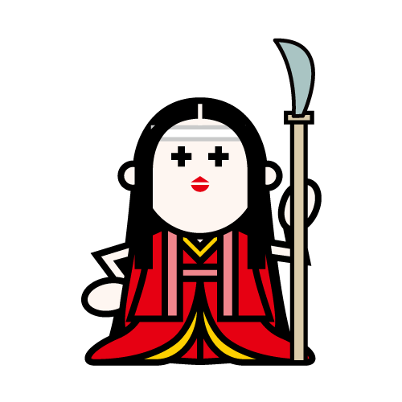
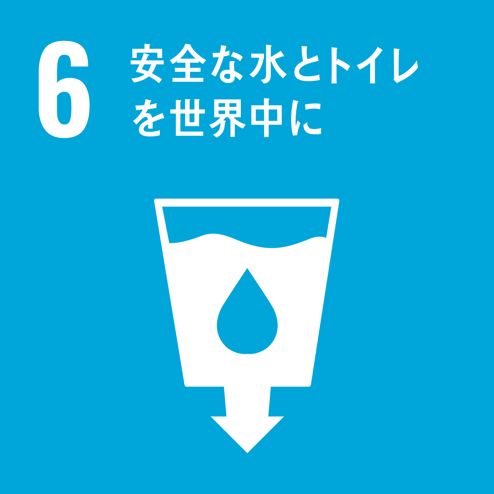
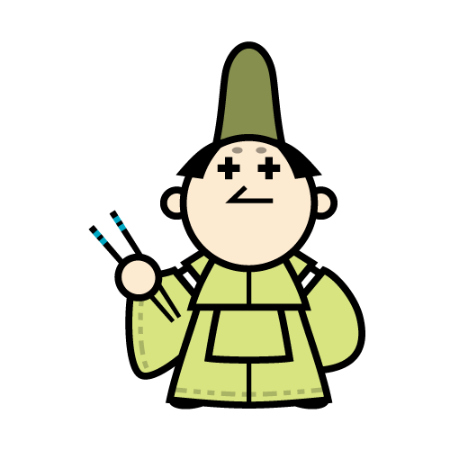
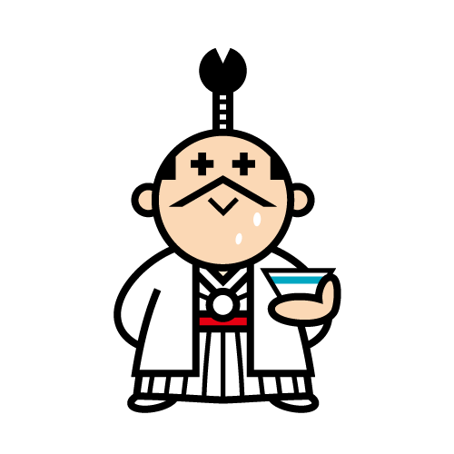

キャラクター紹介
-
Eco僧侶
信条：子どもはみんなの宝物
たくさんの子どもを里親として受け入れる、慈悲深い上人。
途上国の絶対的貧困はもちろん、パッと見でわかりにくい相対的貧困問題に関心が強い。家畜のCO2問題に敏感で、菜食主義。
意外にもパイロット免許を持ち、所有する旧式のプロペラ機を用いて途上国で食糧等物資の支援を行っている。
廃油で動くディーゼルエンジンに換装しようか、悩んでいる。
※一〇〇式重爆撃機を支援物資運搬用に改造 担当SDGS項目
担当SDGS項目貧困をなくそう
-

Eco農夫
信条：食べるものに困らない世の中を
年貢の取り立てが厳しい中、死罪になることを承知の上で直訴を決行して命を落とした義人・茂左衛門の子孫。
ご先祖様の想いを引き継ぎ、飢餓で苦しむ人が一人でも減るよう日々農業に勤しむ。
冷害に強い新しい種子の開発をはじめ、古代種の保存や有機農法にも熱心。
利益を独り占めにしようとする人がとても嫌い。新開発した果物の種を奪う、外国人も嫌い。
水を節約できる水耕栽培のIT化を実践している。
担当SDGS項目
飢餓をゼロに
-

Eco典医
信条：肥満は万病の元
Eco将軍の御典医でありながら、お金のない庶民からはお金を取らずに治療を続ける名医。
腸活をはじめ、予防医療を推進する総合診療医でもある。
健康管理に関心が低い人に厳しい。「食いすぎなんだよ！」が口癖。
使い捨てメスを研ぎ、こっそりカッターとして使うのが趣味。
担当SDGS項目
すべての人に健康と福祉を
-

Eco教師
信条：勉強と同等に、人格教育を
「勉強も運動も、苦手な子どもがいるのは仕方がない。ただ道徳心や礼儀作法だけは身につけないとその子どもが大人になった時に恥をかく。」と、人格教育の重要性を説く教育者・学者。
同時に外国語教育を推進し、黒船の船員と無料英会話教室を運営している。
筆記練習はもっぱら裏紙を使うように指導。
友達は黒船のパリー提督。
担当SDGS項目
質の高い教育をみんなに
-

Eco姫
信条：女性は男の道具じゃない
基本的に贅沢が大好きなのだが、温暖化を懸念し夏場はクールビズを推奨、十二単の袖を切り捨ててしまう。
昭和の政治家が着ていた省エネスーツを引き合いに出されると怒り狂う。
冬場は十二単（袖つき）を着こなウォームビズを実践。
政略結婚の道具として娘を利用する旧家の風習が嫌いで、密かにEco町奉行に好意を寄せている。
薙刀の腕前は一流。
担当SDGS項目
ジェンダー平等を実現しよう
-
Eco忍者
信条：モノは大切に
使い捨てが大嫌い。手裏剣も必ず回収、再利用。
忍術は超一流なのだが、成人した今でも「勿体無いオバケ」が怖い。
また、大の綺麗好きのため任務中も野外で用を足すことを嫌い、何度となく厠で敵に見つかった過去を持つ。
雨水や海水を濾過し、安全に飲む方法を日々研究している。担当SDGS項目
安全な水とトイレを世界中に
-

Eco侍
信条：エネルギー問題を解決し、争いのない世の中を
馬術も得意なのだが、移動手段は専ら徒歩。馬以外の乗り物は駕籠（かご）、人力車、自転車など人力の物のみ、認めている。
健康オタクで、志士達の間では一番ストイックな性格。
「NO CAR DAY」の水曜に渋滞を見つけると、すさまじく憤る。
自然エネルギー以外は嫌い。
担当SDGS項目
エネルギーをみんなに。そしてクリーンに
-
Eco商人
信条：子どもが働かなくても良い世の中を
子どもを働かせる必要がない世の中を作るため、従業員により多くのお給料を渡せるように努力をしている商人の鏡。
実直が故に、悪代官と結託し暴利をむさぼる越後屋や武器商人が嫌い。
温和だが算盤ヌンチャクの達人で、煤竹素材にこだわる
担当SDGS項目
働きがいも経済成長も
-

Eco大工
信条：魚を与えるのではなく、釣り方を教えよ
手先がとても器用な大工で電気回路やPC、インターネットの仕組みづくりにも詳しい。
車も含めて大抵のものは直すことができるため、買い換えをすることは滅多にない。
お裁縫だけは苦手で、破れた着物は小言を言われながら奥さんに繕ってもらう。
担当SDGS項目
産業と技術革新の基盤を作ろう
-

Eco貴族
信条：不平等な貿易は、差別心から生まれる
砂漠化や間伐材の有効利用に興味があるため、「MY箸」を持ち歩いている。
森林伐採の問題を解決するためには、開発途上国の産業構造を変える必要があるとの自論を持つ。
育ちが良いため正義感が強く、不平等条約を求める黒船と弱腰な幕府が嫌い。
攘夷論者ではないが、尊攘主義者。
担当SDGS項目
人や国の不平等をなくそう
-
Eco火消し
信条：建設コストの低い住まいづくり
町火消し・いろは四十八組「め組」に属し、普段は鳶人足の頭として街づくりに携わっている。
勝気な江戸っ子で、タバコのポイ捨てを見つけると、烈火の如く怒る。
自然素材が好き。
喧嘩は好きだが、弱い。
担当SDGS項目
住み続けられるまちづくりを
-
Eco力士
信条：三度のちゃんこより、GOMI拾い
常に風呂敷を携帯しており、買い物やゴミ袋としてフル活用している。道端に落ちている空き缶やペットボトルを見つけるとついつい拾って包んでしまう。
_
３度のちゃんこよりもゴミ拾いが好きなきれい好きな力士。
食いしん坊でフードロス問題に敏感であるため、食事は残さず全ていただくのがモットー。
担当SDGS項目
つくる責任、つかう責任
-

Eco町娘
信条：打ち水は世界を救う
「暑いなぁ」と思うとすぐに打ち水をする快活で行動力のある町娘。
ちんぴら浪人の足に一度水をかけてしまい、絡まれているところをEco侍に救われてから一途に彼を想っている。
燃料問題に敏感で、化石に変わる燃料情報収集が趣味。
担当SDGS項目
気候変動に具体的な対策を
-
Eco漁師
信条：漁業関係者こそ、海でゴミを捨てない意識を
海にタバコをポイ捨てする漁業関係者が多いことに胸を痛める、心優しい漁師。
また海洋プラスチックゴミを減らすため、原因とされる十川(長江、黄河、海河、珠江、アムール川、メコン川、インダス川、ガンジス川、ナイル川、ニジェール川)周辺で、地域住民達と清掃活動をするのが、密かな夢。
担当SDGS項目
海の豊かさを守ろう
-
Ecoマタギ
信条：山と水源は共有財産
山頂に生える木々の樹皮が大型動物に食べられ、山の森林保護を目的にかけられた樹皮ネットをハイキング中に見つけ、ハンターになることを決意した新米マタギ。
土壌汚染を避けるため猟場で鉛の弾は使わないことをポリシーとするも、非鉛弾を撃つたびに頭の中で「ラーメンが一杯！ラーメンが二杯！」などと無意識のうちにコスト計算をしてしまう性格を直したいと考えている。
担当SDGS項目
陸の豊かさも守ろう
-
Eco奉行
信条：見て見ぬふりはしない
若かりし頃から町人との交流も多くさまざまな友達がいるため、人権問題に敏感。
地位を利用した隠蔽工作などの不正を憎み、正当な裁きが出来ない場合はEco忍者に証拠集めを命じる時が多い。
「お任せあれ！」が口癖。日の丸扇子を好んで使う。
担当SDGS項目
平和と公正をすべての人に
-

Eco将軍
信条：四海兄弟
為政者として常に下々の幸せを願う、心優しい三代目将軍。
日本は勿論、全世界にとって危惧すべき食糧問題と水問題、疾病対策には特に敏感。
経済力が下がりつつある日本において、食糧自給率についての国民意識を高めねば日本の将来は危ういと、危機意識を募らせている。
途上国からの搾取を行う列強国に対して、日本がどのようなバランサーになるべきか常に考えている優秀な為政者。
担当SDGS項目
パートナーシップで目標を達成しよう